SUPPORTING IMPLEMENTATION EVIDENCE
1. Phase Overview
This phase extends SweetCrust Bakery Ltd’s on-premises Active Directory environment into Microsoft Entra ID using Microsoft Entra Connect Sync. It connects traditional AD DS identities to Microsoft cloud identity services while preserving the existing on-premises identity foundation.
The purpose of this phase is to synchronize users, groups, and device identity information from the on-premises directory into Microsoft Entra ID. This enables Microsoft 365 access, hybrid identity, future Intune endpoint management, and centralized cloud-based identity visibility.
This phase builds directly on Phase 1: On-Premises Identity Foundation and prepares SweetCrust Bakery Ltd for Phase 3: Modern Endpoint Management.
2. Implementation Steps
Implementation Area 1 — Prepare On-Premises Active Directory
Before installing Microsoft Entra Connect Sync, the on-premises Active Directory environment was validated to confirm directory health, DNS resolution, UPN suffix readiness, time synchronization, and domain controller status. These checks reduce the risk of synchronization failures after hybrid identity is introduced.
Task 1.1 — Verify Domain and Forest Functional Levels
The domain and forest functional levels were verified to ensure compatibility with Microsoft Entra Connect Sync. This confirmed that SweetCrust Bakery Ltd’s AD DS environment could support hybrid identity synchronization.
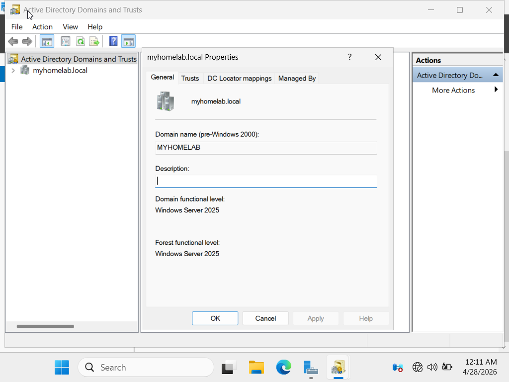
Evidence: The domain and forest functional levels were validated before synchronization, confirming the on-premises directory was ready for Microsoft Entra Connect integration.
Task 1.2 — Verify Domain Controller Health
Domain controller health was validated using diagnostic commands. Because this lab used a single domain controller, replication output correctly reflected no additional replication partners.
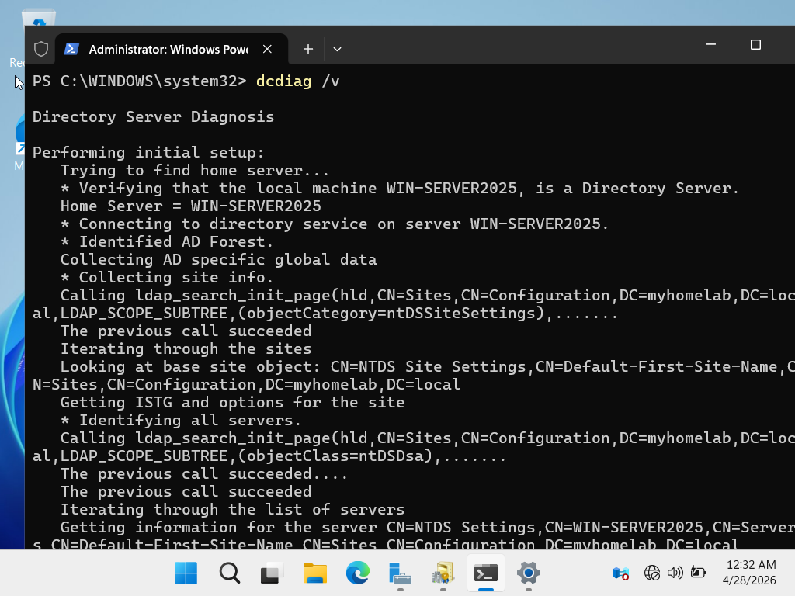
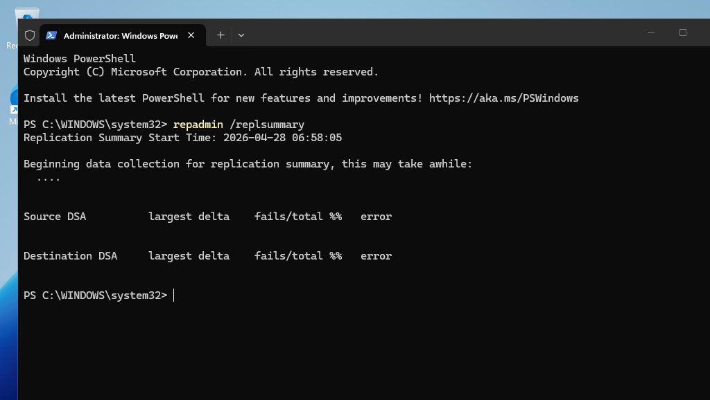
Evidence: Domain controller diagnostic checks confirmed the AD DS environment was healthy. The replication output was expected for a single-domain-controller lab and did not indicate a fault.
Task 1.3 — Verify DNS Resolution
DNS resolution was tested for internal domain names, the domain controller hostname, and external Microsoft cloud endpoints. DNS is critical because Microsoft Entra Connect depends on name resolution for both AD DS and Microsoft cloud services.
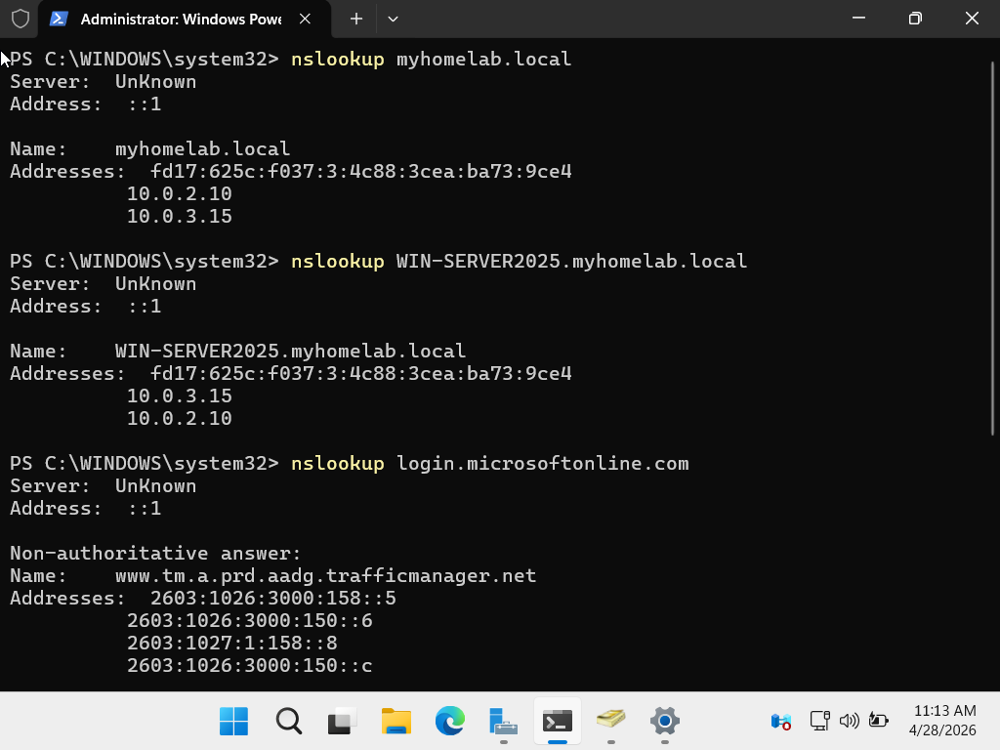
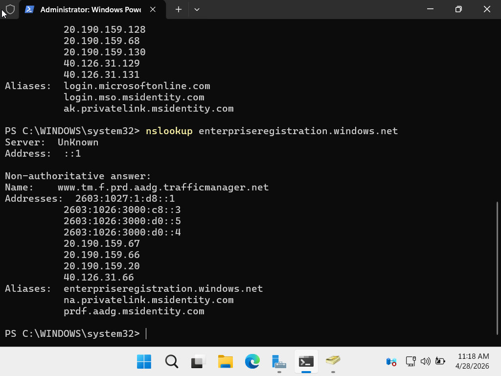
Evidence: Internal and external DNS resolution worked correctly, confirming that the domain controller and Microsoft cloud services could be located during synchronization.
Task 1.4 — Create Entra Connect Sync Account
A dedicated synchronization account named entra_sync was created for Entra Connect
operations. Using a dedicated account improves administrative separation and makes synchronization
activity easier to identify.
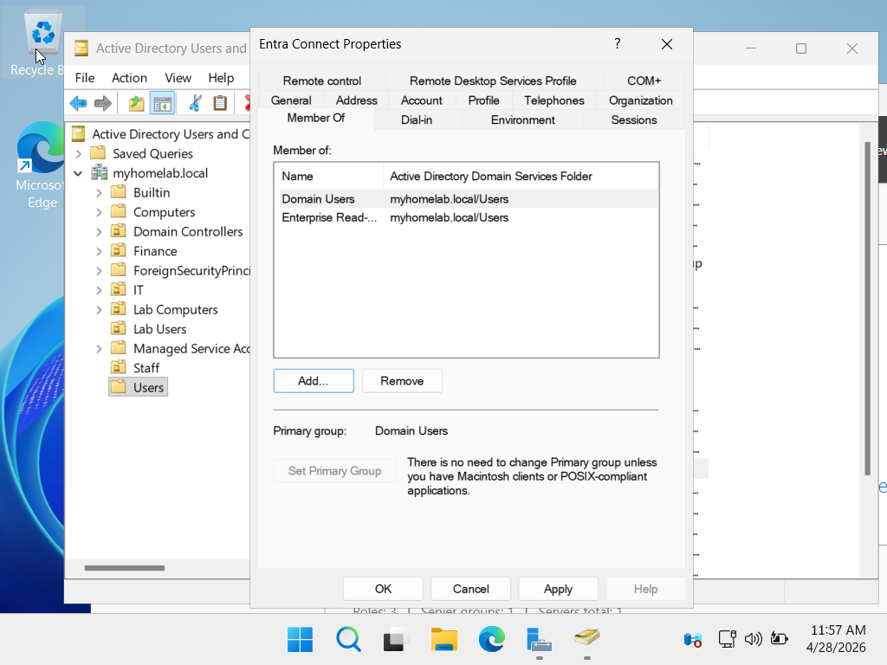
Evidence: A dedicated Entra Connect synchronization account was created to support controlled hybrid identity operations for SweetCrust Bakery Ltd.
Task 1.5 — Verify Time Synchronization
Time synchronization was checked to reduce authentication and synchronization issues between the on-premises directory and Microsoft cloud services. Time drift can affect authentication tokens, Kerberos, and trust relationships.
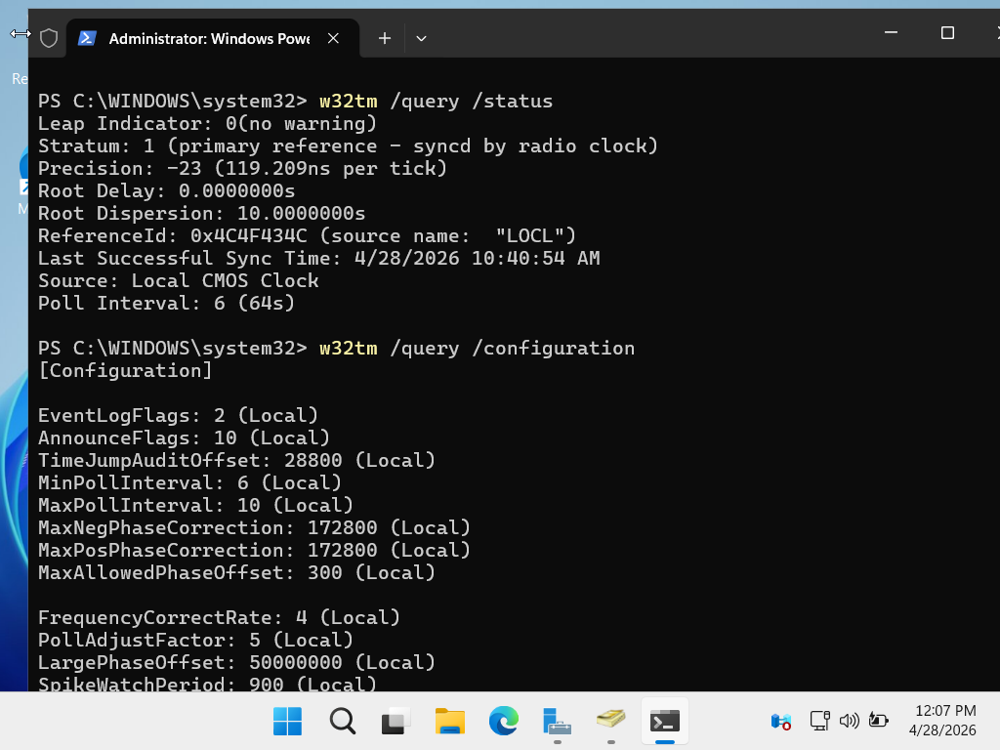
Evidence: Time synchronization was validated before Entra Connect installation, reducing the risk of authentication and synchronization errors.
Task 1.6 — Verify UPN Suffix
The UPN suffix was verified to ensure user identities would align correctly with Microsoft Entra ID. This is important because cloud sign-in depends on clean and consistent user principal names.
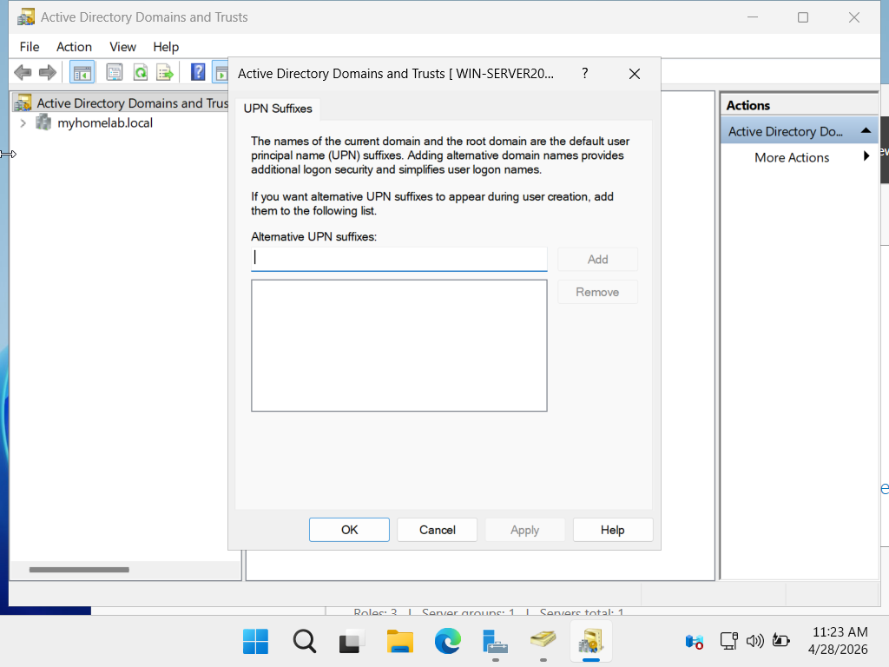
Evidence: UPN readiness was validated to support consistent user sign-in identity between AD DS and Microsoft Entra ID.
Implementation Area 2 — Install Microsoft Entra Connect Sync
Microsoft Entra Connect Sync was installed and configured to connect the on-premises AD DS environment to Microsoft Entra ID. This created the hybrid identity bridge between SweetCrust Bakery Ltd’s local domain and its Microsoft 365 cloud tenant.
Task 2.1 — Download Entra Connect Installer
The Microsoft Entra Connect installer was downloaded to the server so the hybrid synchronization configuration could be installed locally.
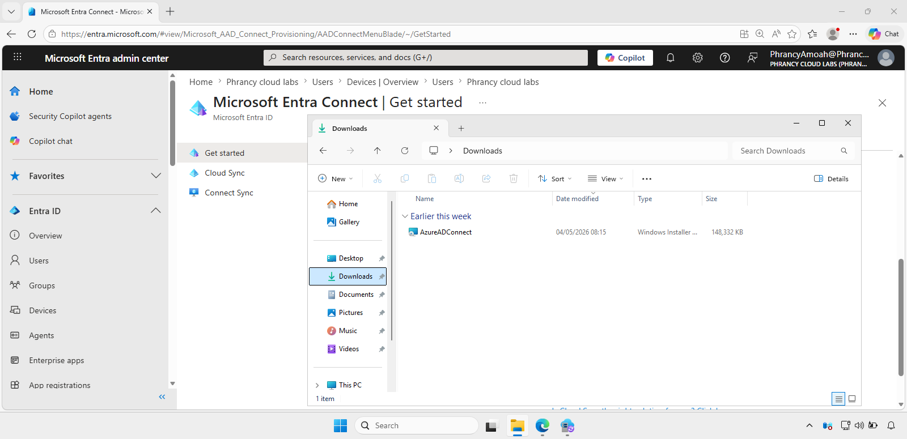
Task 2.2 — Launch the Installer
The Entra Connect installer was launched to begin the hybrid identity configuration workflow.
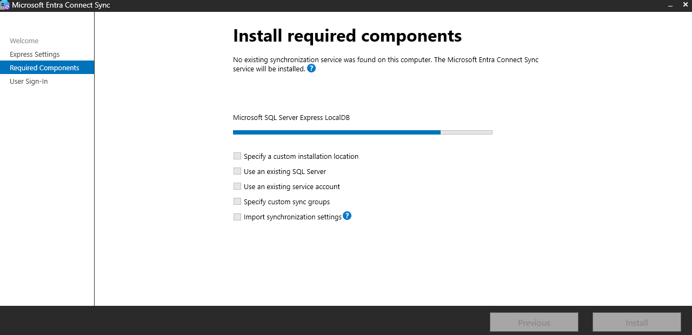
Task 2.3 — Connect to Microsoft Entra ID
The installer was connected to Microsoft Entra ID using cloud administrator credentials. This allowed the synchronization tool to register with the tenant and prepare cloud-side identity synchronization.
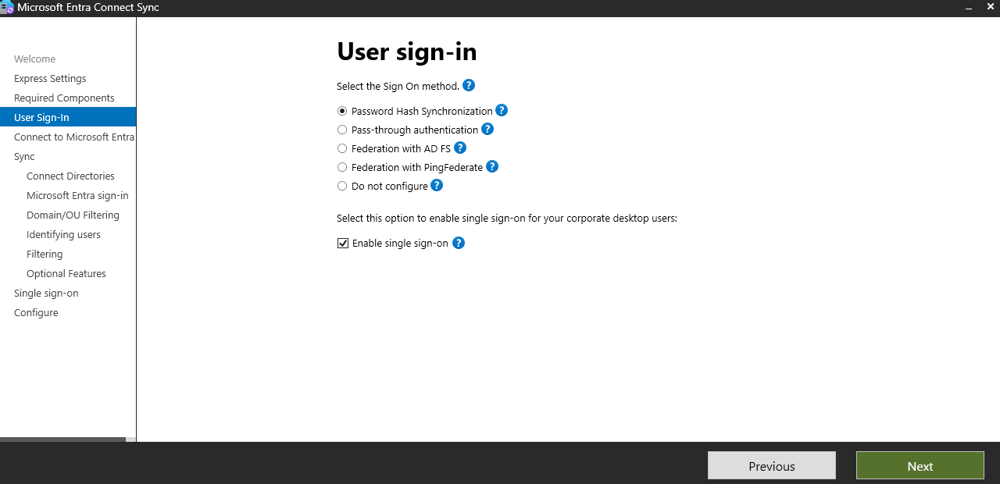
Evidence: Microsoft Entra Connect successfully connected to the cloud tenant, establishing the cloud-side trust required for synchronization.
Task 2.4 — Connect to Active Directory Domain Services
The on-premises Active Directory forest was connected to the Entra Connect configuration. This linked the local AD DS identity source to Microsoft Entra ID.
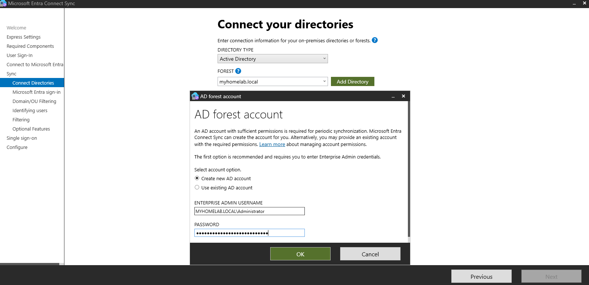
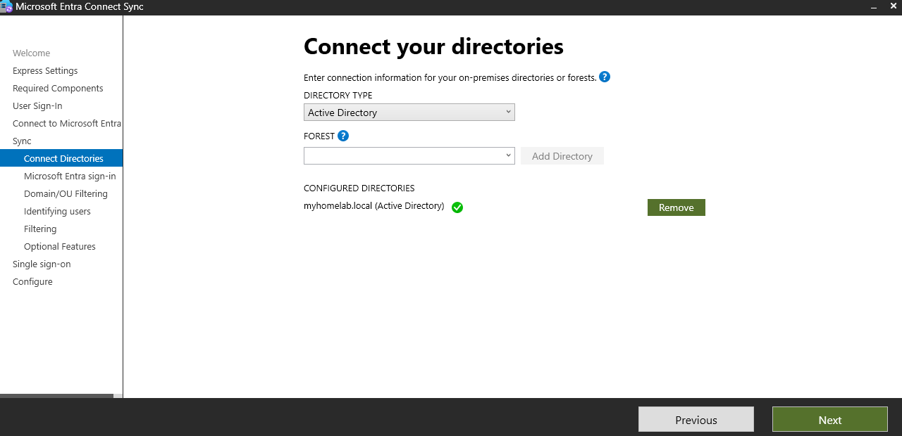
Evidence: The on-premises AD DS forest was successfully added to Entra Connect, enabling SweetCrust Bakery Ltd’s local identities to synchronize to the Microsoft cloud.
Task 2.5 — Configure Microsoft Entra Sign-In Settings
Microsoft Entra sign-in settings were configured to align the on-premises user identity with the cloud identity format used for Microsoft 365 authentication.
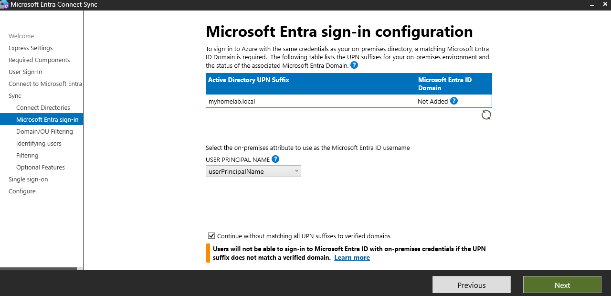
Evidence: User sign-in settings were reviewed to ensure synchronized users would have predictable cloud sign-in identities.
Task 2.6 — Configure Domain and OU Filtering
OU filtering was configured so that only the intended directory objects would synchronize to Microsoft Entra ID. This helps avoid synchronizing unnecessary test, service, or administrative objects into the cloud tenant.
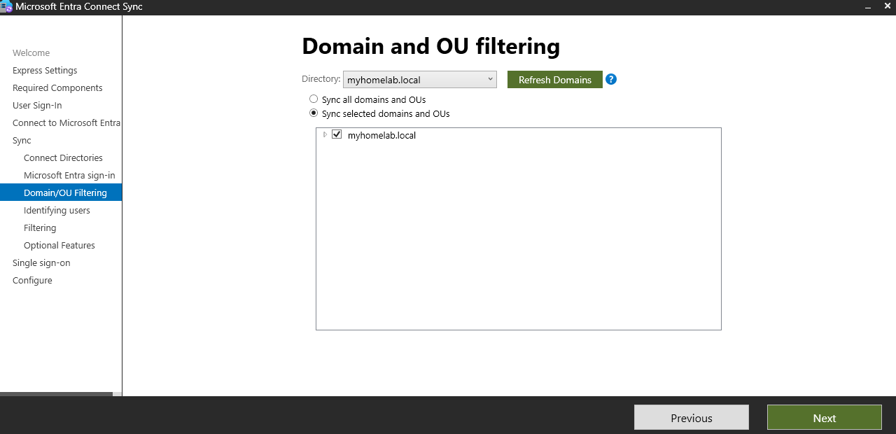
Evidence: OU filtering limited synchronization scope, ensuring only selected SweetCrust Bakery objects were synchronized to Microsoft Entra ID.
Task 2.7 — Configure User Identity and Source Anchor
User identity and source anchor settings were configured to determine how on-premises users are matched and uniquely tracked in Microsoft Entra ID.
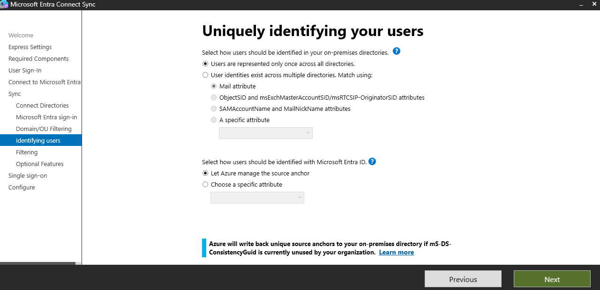
Evidence: Identity matching settings were configured to maintain a stable relationship between local AD DS users and their cloud identities.
Task 2.8 — Configure Optional Features
Optional features were reviewed during configuration to determine which hybrid identity features were appropriate for this lab environment.
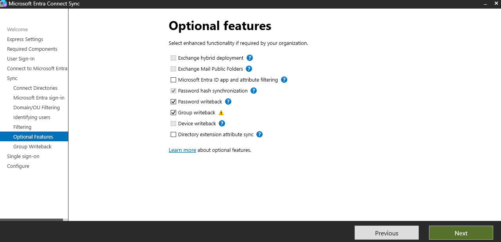
Task 2.9 — Configure Group Writeback
Group writeback options were reviewed as part of the hybrid identity configuration. This demonstrated awareness of how group objects can be managed between cloud and on-premises environments.
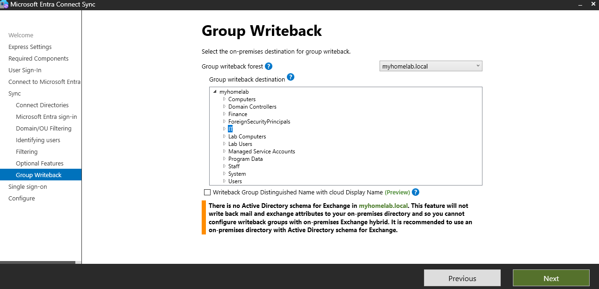
Task 2.10 — Enable Seamless Single Sign-On
Seamless SSO was enabled to improve the user authentication experience between domain-joined devices and Microsoft cloud services. This allows domain users to access cloud services more smoothly when signed in from trusted domain environments.
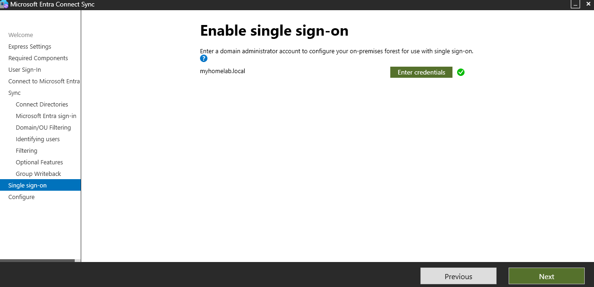

Evidence: Seamless SSO configuration was enabled, improving the Microsoft 365 sign-in experience for SweetCrust Bakery domain users.
Task 2.11 — Final Review and Start Synchronization
The final configuration was reviewed and synchronization was started. This completed the main Entra Connect deployment workflow.
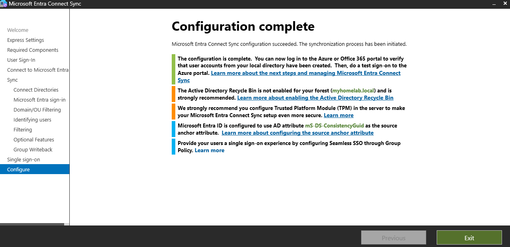
Evidence: Entra Connect configuration completed successfully and synchronization was initiated.
Implementation Area 3 — Enable Hybrid Microsoft Entra ID Join
Hybrid Microsoft Entra ID Join was configured to allow domain-joined Windows devices to register with Microsoft Entra ID. This allows devices to remain joined to the on-premises domain while also participating in cloud-based identity and device management workflows.
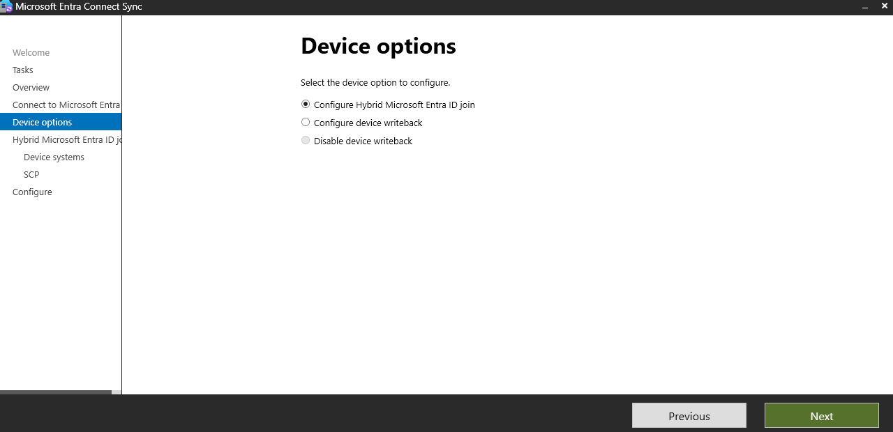
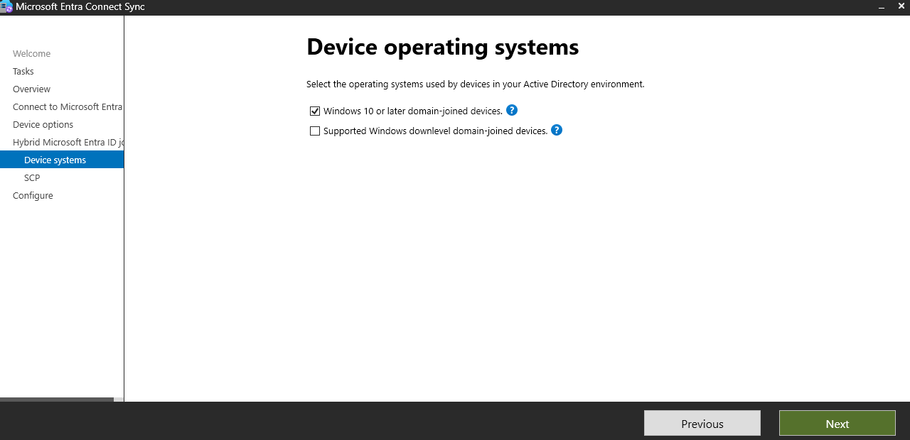
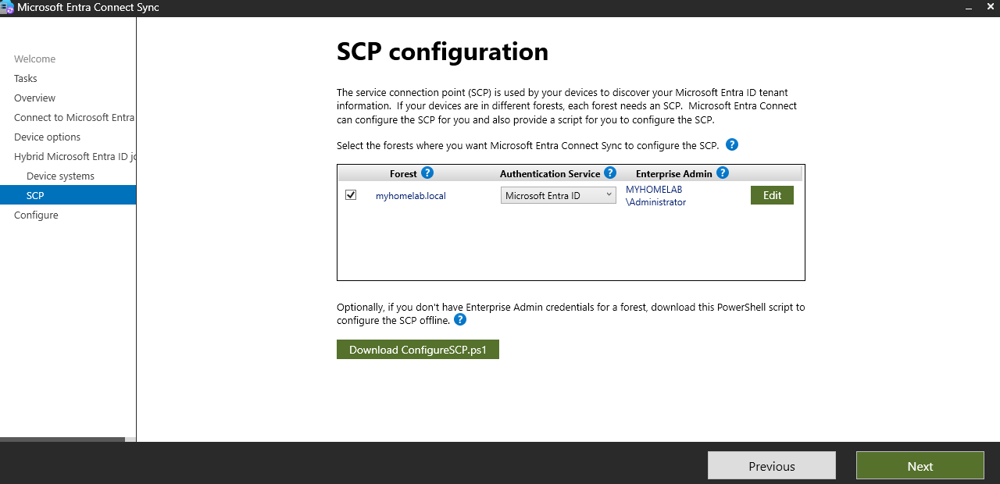
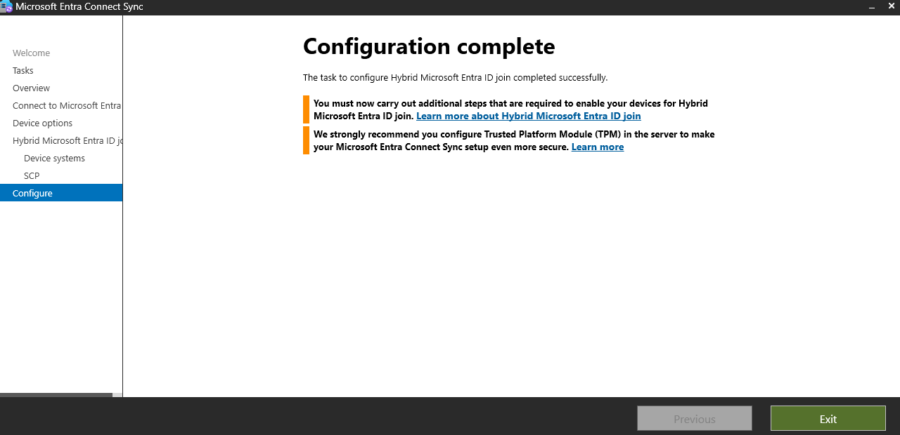
Evidence: Hybrid Microsoft Entra ID Join was configured for Windows 10 or later devices, enabling SweetCrust Bakery domain-joined endpoints to register with Microsoft Entra ID.
Implementation Area 4 — Verify Synchronization in Microsoft Entra ID
After synchronization, users and synchronization status were verified in Microsoft Entra ID. This confirmed that local AD DS objects were visible from the Microsoft cloud administration plane.
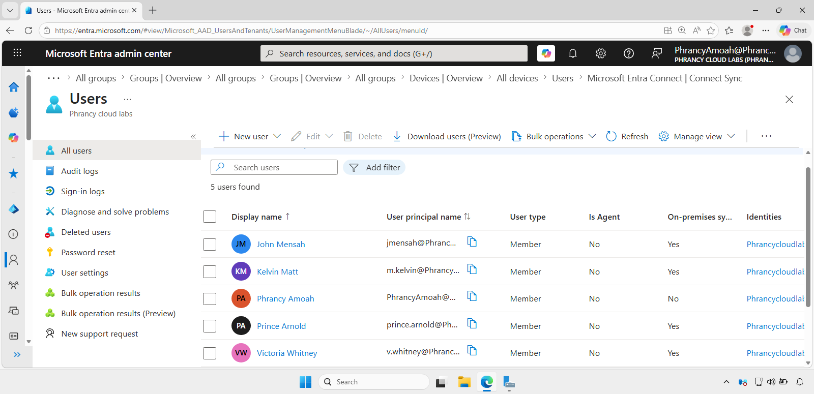
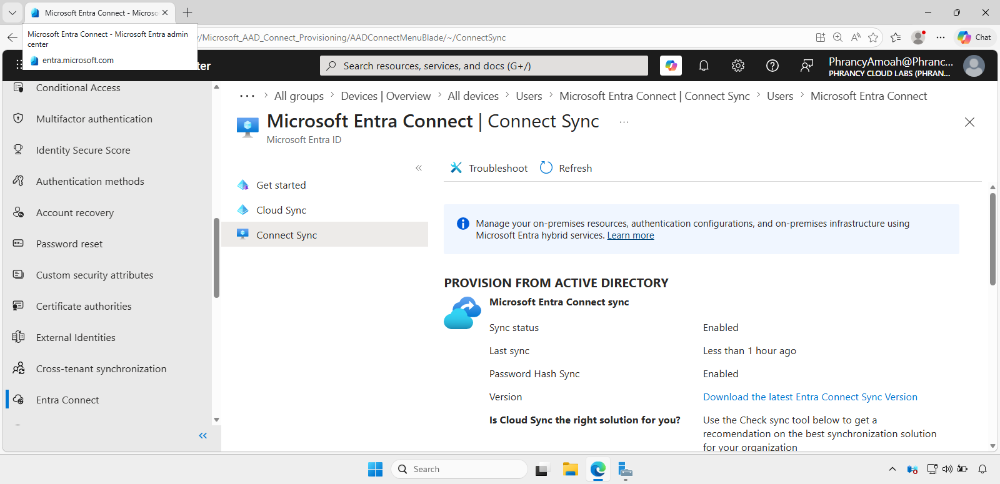
Evidence: Synchronized users appeared in Microsoft Entra ID and synchronization status confirmed that the hybrid directory connection was functioning.
Implementation Area 5 — Verify Hybrid Join on Windows 11
The Windows 11 endpoint was verified using dsregcmd /status and Microsoft Entra ID device records.
This confirmed the device was recognized by both the on-premises domain and Microsoft Entra ID.
dsregcmd /status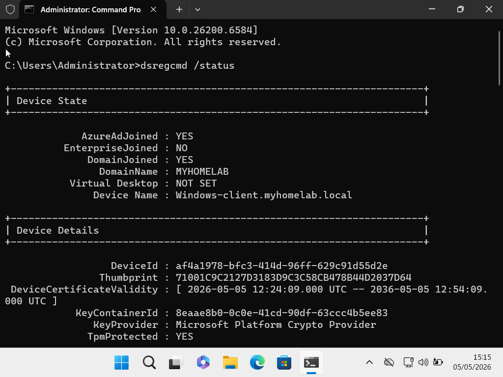
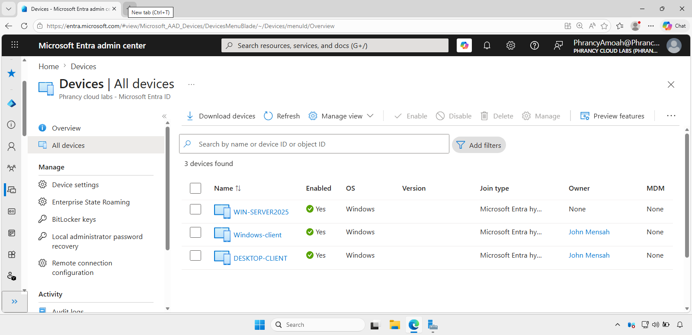
Evidence: Windows 11 hybrid join validation confirmed that the device was connected to Microsoft Entra ID while still operating as a domain-joined endpoint.
Implementation Area 6 — Verify Hybrid Join on Windows 10
The Windows 10 endpoint was also verified to confirm hybrid join behavior across multiple Windows versions. This validated that the configuration was not limited to a single endpoint.
dsregcmd /status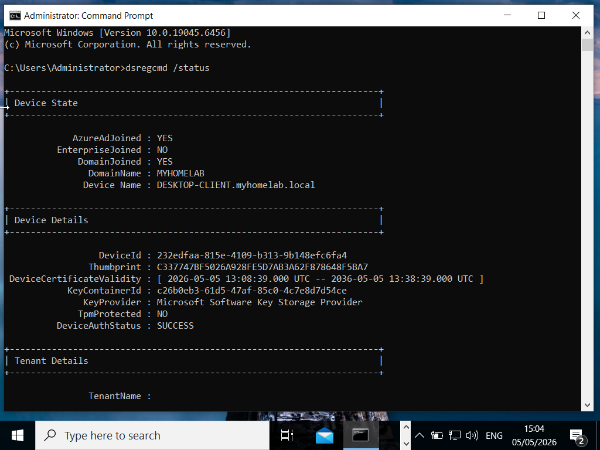

Evidence: Windows 10 hybrid join validation confirmed consistent hybrid identity behavior across multiple SweetCrust Bakery Windows endpoints.
3. Technical Evidence
Technical evidence captured in this phase includes Active Directory preparation checks, DNS verification, Entra Connect installation, cloud sign-in configuration, OU filtering, Seamless SSO configuration, synchronization validation, and hybrid join verification for Windows 10 and Windows 11 devices.
- Directory Readiness: AD DS health, functional levels, DNS, UPN suffix, and time synchronization were validated before enabling synchronization.
- Hybrid Identity Bridge: Microsoft Entra Connect linked the on-premises AD DS forest to Microsoft Entra ID.
- Controlled Scope: OU filtering was configured to prevent unnecessary objects from synchronizing to the cloud.
- User Synchronization: SweetCrust Bakery users appeared in Microsoft Entra ID after synchronization.
- Device Hybrid Join: Windows 10 and Windows 11 endpoints were validated using
dsregcmd /statusand Entra device records.
4. Validation
- Confirmed the on-premises Active Directory environment was healthy before synchronization.
- Verified DNS resolution for internal and Microsoft cloud endpoints.
- Confirmed the Entra Connect sync account was created and available.
- Installed and configured Microsoft Entra Connect Sync successfully.
- Validated OU filtering and identity configuration during setup.
- Confirmed synchronized users appeared in Microsoft Entra ID.
- Verified synchronization status from the Microsoft Entra admin center.
- Confirmed hybrid join status on Windows 11 using
dsregcmd /status. - Confirmed hybrid join status on Windows 10 using
dsregcmd /status.
5. Phase Takeaways
- Microsoft Entra Connect provides the bridge between traditional AD DS and cloud identity services.
- Directory health, DNS, time synchronization, and UPN readiness are critical before enabling synchronization.
- OU filtering helps prevent unnecessary or unintended objects from synchronizing to the cloud.
- Hybrid Microsoft Entra ID Join allows domain-joined devices to participate in cloud-based identity and access workflows.
- This phase enabled SweetCrust Bakery Ltd to extend on-premises identities into Microsoft Entra ID while preserving its existing AD DS foundation.